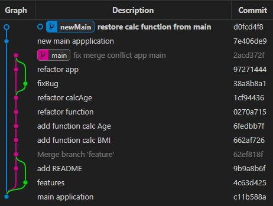

Git branching
Prapas K : 2026, 31 AUG

What is Git ?
Git is version control for manage your changes history each version (commit) of your file.
Part 1: How Git Works Internally
It uses a snapshot model.
When you commit, Git takes a "picture" of what all your files look like at that moment.
If a file hasn't changed, Git doesn't create a new copy; it simply creates a link
to the exact same file (the "blob") it already has stored from a previous commit.
It is a Content-Addressable File System.
Scenario
- firstDraft.ai -----> edit text
- secondDraft.ai -----> change color
- secondFinal.ai -----> change color
- secondFinalV1.ai -----> change layout
- secondFinalllllV2.ai -----> bigger text
- secondFinalOfFinalV1.ai -----> move image to left a bit
// Your karma: I think first draft is perfect. Develop from that version.
From scenario you will notice that, Git control version is something like this but instead of you create a new file again and again,
Git will manage that instead of you, let make you do not create a new file again and again.
Git lets you keep only one latest file with one name. When you make changes,
you just "save" a snapshot (called a commit).
Deep Dive into the Vocabulary
| Term | Deep Description |
|---|---|
| Commit | A commit is not a file; it is a commit object.
It is a database entry that holds: |
| Remote |
Git is local-first. A "Remote" is simply a text string in your config file ( |
| Branch |
A branch is not a folder containing files. |
| Origin |
This is simply the default name you give to a remote when you run |
| HEAD |
|
| Upstream |
This is the specific remote branch that your local branch is tracking. |
| Loose Blob |
The raw, uncompressed (but zlib-compressed), individual object file sitting in |
| Detached |
A state where |
| Deltas / Diff |
The difference between two blobs. A Delta is a set of instructions (e.g., "Line 10: delete 'foo', insert 'bar'"). |
Summary of the Workflow
1) You edit a file in your Working Directory.
2) You run git add: The file is copied to the Index (Staging Area). It is hashed and compressed.
3) You run git commit: The Index is hashed into a new Commit Object, which points to a new Tree, which points to Blobs.
4) Deduplication kicks in: If the content is identical to a previous blob, the new commit just points to the old blob.
5) Packing (later): Loose objects are gathered into Packfiles using Deltas to minimize disk usage.
6) Branches (pointers) move around these objects, allowing you to switch contexts instantly without copying data.
Where Git locate ?

After you run command git init inside root of project folder.
.git folder was created and hidden folder.
.git folder will stores all the data for your repository, including commit history, in the .git folder.
Note .git folder must locate at root project folder
Can have multiple .git folder at same project
Ans. No
But you can have nested .git folders (NOT RECOMMENDED). As I mentioned above, the .git folder must be in the root project.
That means you can have subprojects within the main project that have their own .git folders.
For example:
Project1/.git1 (and another file) (Root for Project1)
Manages the entire Project1 folder, including Module.
Project1/Module/.git2 (and another file) (Root for Module within Project1)
Manages only the Module folder as its own independent project.
Scenario:
- If file in Module folder has changes .git1 and .git2 will save those changes
- If file in Project1 folder (file in Module folder not changes any) has changes .git1 will save this changes
- If roll back at Project1 folder, Module folder will be affect too, that mean if Module folder do something new, it will be lose
- If roll back at Module folder it will not affect to Project1 folder because it independent from parent
What is Git Branch ?
Branching means you diverge from the main line of development and continue to do work without messing with that main line : Git-scm
Start Git (Windows)
- Install Git bash
- Open CMD or Git bash, check that completely installation
command
git -vExpected result version of git > git version 2.49.0.windows.1 - Change diretory to your project. Or open in code editor then open terminal.
command
git inityou will see.gitfolder (Disable hidden attributes folder first) -
In code editor like VSCODE has
extensionthat help you track branching easilyGit graph
In addition, it is also necessary to practice viewing Git logs and status.

Part 1: How Git Works Internally
Git is not a version control system that saves differences (patches); it is a Content-Addressable File System. This fundamental design choice dictates how it stores data, saves space, and handles history.
1. Snapshots, Not Deltas (The Core Philosophy)
Unlike SVN or CVS, which store a file and then a patch (e.g., "line 4 changed from 'A' to 'B'"),
Git treats every commit as a complete snapshot of the entire project state at that moment.
• The Tree Structure: Every commit contains a root "Tree" object. This tree is a directory listing of every file in the project at that specific point in time.
• The Blob: Each file in the tree points to a "Blob" (Binary Large Object), which is the raw content of the file.
• The Commit: The commit object is a pointer to a Tree, a parent Commit (the previous snapshot), metadata (author, date), and a message.
Why this matters:
Because the entire project is saved every time,
you can jump to any point in history,
check out a file from 6 months ago,
and have a perfectly valid, runnable version of the project instantly.
No "merge" logic is needed to reconstruct a file;
the file simply exists in that commit's tree.
2. Deduplication (The Space Saver)
Since Git stores full snapshots (blobs) for every version of every file, a naive approach would fill your disk with massive redundancy. If you modify a 50MB image file just once, a naive system would store the original 50MB + the changed 50MB = 100MB of data.
Git solves this using Content-Addressable Storage combined with a strict Deduplication rule:
• The SHA-1 Hash: Every blob (file content) is hashed using the SHA-1 algorithm. This produces a 40-character hexadecimal string (e.g. a1b2c3d4...).
• The Uniqueness Rule: If Git encounters a file with a hash that already exists in the object database, it does not copy the data again. It simply points the new reference to the existing blob object.
• The Result: Git stores the content only once. Both the old version and the new version of that file point to the same blob object. If you rename a file but don't change its content, Git simply updates the pointer in the tree fromFile1.txt -> BlobAtoFile2.txt -> BlobA. The actual data on disk remains unchanged.Identical Files: If you have two files with the exact same content, they both point to the same single blob on disk.
Moved / Renamed Files: If you rename old.txt to new.txt without changing the content, Git does not store a second copy. It just updates the directory tree to point to the existing blob.
Overlapping Versions: If you have a file that is 99% the same as its previous version, Git only stores the full content of the first version. The second version is stored as a tiny "patch" (delta) applied to the first.
Analogy: Imagine a library where every book has a unique ISBN (Hash). If a patron returns a book and brings a new copy with the exact same ISBN, the librarian doesn't buy a new physical book. They simply update the catalog to say, "The second copy is the same as the first one." The physical space remains unchanged.
3. Loose Blobs vs. Packfiles (Storage Optimization)
When you run git add, Git creates a Loose Blob. This is a small file (stored in .git/objects/xx/yyy) containing a header and the compressed file data.
• Problem: Storing hundreds of loose objects for every file in your history consumes too much disk space and makes scanning for objects slow.
• Solution: Packing: If two files have the exact same content, they produce the exact same hash.
• Deltification: Git groups similar blobs together. It takes a full file and a slightly different version of it. Instead of storing both fully, it stores the full file and a small "delta" (a patch) that describes how to transform the full file into the second version.• Packfiles: These deltas are compressed and written into a single binary file called a Packfile (.pack).• Index.idx: An index file is generated alongside the packfile, acting as a map to quickly find objects within the pack.
• Lifecycle: As you commit, you have "loose" objects. Eventually,git gc(garbage collection) orgit pushpacks these loose objects into packfiles. This is why your repository feels light until you've made many commits, at which point the packfiles take over the load.
Part 2: Deep Dive into Git Commands
what it does, how it works internally, and when to use it.
1. Initialization & Cloning
git init
• Action: Initializes a new Git repository in the current directory.
• Internal Logic: Creates the .git hidden directory containing the objects (blobs, commits, trees),
refs (pointers to branches), config (settings), and HEAD (pointer to the current branch).
• Use Case: The very first step in creating a new project locally.
git clone <repo-url> [<directory>]
• Action: Copies an existing remote repository to your local machine.
• Internal Logic:
1 Downloads all loose objects and packfiles from the remote.
2 Creates a bare local copy of the remote's object database.
3 Creates a working directory (checkout of the default branch, usually main or master).
4 Sets up a remote named origin pointing to the URL.
5 Sets up a tracking branch (e.g., main tracks origin/main).
• Use Case: The very first step in creating a new project locally.
2. Branching & Pointers
git branch
• Action: Lists, creates, or deletes branches.
• Deep Dive:
• Branches are pointers. They are not separate directories. A branch named feature-x is simply a file in
.git/refs/heads/feature-x containing a SHA-1 hash (a pointer to a specific commit).
• Creating: git branch <name> creates a new pointer referencing the current HEAD's commit.
• -a: Lists all local and remote-tracking branches.
• -d: Deletes the branch pointer. It fails if the branch has unmerged changes (to prevent data loss).
• -m: Moves the pointer to a new name.
git checkout <branch>
• Action: Switches the current working directory and index to a specific branch.
• Internal Logic:
1 Moves HEAD to point to the target branch's commit.
2 Deletes the local working tree files (or renames them).
3 Copies the files from the target commit's Tree object into your working directory.
•
-b: Creates the branch pointer first, then switches to it.
git fetch [url]
• Action: Downloads objects from a remote repository without merging them.
• Internal Logic:
1 Connects to the remote.
2 Compares your local refs with the remote refs to find missing objects.
3 Downloads those objects (blobs, commits, trees) into your local .git/objects.
4 Crucially: It updates the remote-tracking branches (e.g., origin/main) to point to the new commits.
5 It does NOT touch your local main branch or your working files.
• Why use it?: It is safe. You can fetch, look at the new code, test it, and decide later whether to merge it.
git pull [url]
• Action: Fetches from the remote and merges the results into your current branch.
• Internal Logic: It is essentially a shortcut for:
git fetch origin
git merge origin/<current-branch-name>
• Difference from Fetch: fetch is passive (download only); pull is aggressive (download + integrate + potentially create a merge commit).
3. Merging & Replaying
git merge <branch>
• Action: Combines the history of two branches.
• Deep Dive:
• Fast-Forward: If current is an ancestor of target (you fell behind),
Git simply moves the current pointer to target. No new object is created.
• Three-Way Merge: If both branches have diverged (commits exist on both sides),
Git calculates a Merge Base (the last common ancestor). It then diffs Base -> Current and Base -> Target.
If changes don't overlap, it creates a new commit pointing to a new Tree that combines both changes.
• Conflict: If two branches edited the same line differently,
Git cannot auto-resolve. It marks the file with conflict markers (<<<<<<< =======, >>>>>>>) and halts.
You must edit the file, stage it (git add), and complete the merge (git commit).
git cherry-pick <commit-hash>
• Action: Takes a specific commit from another branch and creates a new commit on the current branch that looks identical.
• Internal Logic:
1 Computes the difference between the commit being picked and the commit before it (^).
2 Applies that diff to the current branch's state.
3 Creates a new commit object with the same file changes but a new author/date (unless --no-commit is used).
• Use Case: When you need a specific bug fix from a feature branch but don't want to merge the entire feature branch. Warning: It breaks the linear history connection, making the two commits independent.
git rebase [upstream]
• Action: Rewrites history by moving your current branch to start from a different point.
• Deep Dive:
1 Identifies the current tip of your branch and the tip of the upstream branch.
2 Takes every commit on your branch and "replays" it onto the new upstream base.
3 Creates new commit objects (with new hashes) for each step.
Visual:
---A---B---C (master)-----X---Y---Z (feature)---A---B---C (master)-----C---X'---Y'---Z' (feature, now based on C)
• -i (Interactive): Allows you to stop at each step of the rebase to edit,
squash (combine), drop, or reorder commits before applying them to the new base.
• Warning: Never rebase public history. If you rebase and push, you are lying about history. Others will see "ghost" commits and conflict. Only rebase private/local branches before merging them.
4. Restoration & Reverting
git restore
• Action: Restores files in the working directory to match the index (staging area) or a specific commit.
• Deep Dive:
• git restore --staged <file>: Moves a file from the Index back to the Working Directory.
• git restore --source=<commit> <file>: Restores a file from a specific commit into the working directory.
• git restore .: Restores the entire working directory to match the current HEAD (undoes all uncommitted changes).
git reset
• Action: Moves the HEAD pointer (and optionally the index and working tree) to a specific commit. This rewrites history.
• Deep Dive:
• --soft: Moves HEAD. Index and Working Directory are untouched. (Useful for "oops, I committed too early, I'll recommit everything").
• --mixed (Default): Moves HEAD. Index is reset to match HEAD. Working Directory remains untouched (your uncommitted edits stay on disk but are no longer staged).
• --hard: Moves HEAD. Index and Working Directory are reset. All uncommitted changes are deleted.
• --HEAD~1: A relative reference meaning "the commit immediately before the current HEAD".
• --HEAD@{n}: A reflog reference meaning "where HEAD was n moves ago".
5. Stashing & Diffs
git stash
• Action: Temporarily hides (shelves) your uncommitted changes and switches you to a clean state.
• Internal Logic:
1 Takes all modified and new files from the working directory.
2 Removes them from the index and working tree.
3 Creates a new commit in the stash reflog (a special stack of commits not linked to any branch).
4 Switches you back to the previous branch/commit.
• git stash list: Shows the stack of stashed commits (FIFO structure).
• git stash pop: Removes the top item from the stash stack and applies it back to the current working directory.
• Use Case: You are working on Task A, realize you need to do Task B (which requires a clean working tree), stash Task A, do Task B, then pop Task A back.
git diff
• Action: Shows the difference between two points.
• Deep Dive:
• git diff: Compares the Working Directory vs. the Index. (What is staged but not yet committed).
• git diff --cached: Compares the Index vs. HEAD. (What is in the staging area).
• git diff <branch1> <branch2>: Compares two commits/branches.
• Output: Shows added lines (+), deleted lines (-), and context ( ).
git show
• Action: Displays the contents of a commit, its tree, its parent, and the diff between it and its parent.
• Use Case: "Show me the actual code changes in commit abc123." It is a one-off view of a commit object.
git log
• Action: Lists the commit history.
• Deep Dive:
• By default: it lists commits from HEAD backwards.
• --oneline: Compresses the output to one line per commit (hash + subject).
• --graph: Shows the topology of branches and merges visually.
• --stat: Shows the amount of lines added/removed per commit.
• --all: Shows history of all branches.
• --decorate: Shows branch names next to the commits.
git status
• Action: Reports the state of the working directory and staging area.
• Deep Dive:
• Modified: Changes in the working directory not yet staged.
• Untracked: New files Git doesn't know about.
• Changes to be committed: Files already added to the index.
• It helps you decide what to do next (e.g., git add, git restore, or git stash).
6. Pushing & References
git push
• Action: Uploads local commits to a remote repository.
• Deep Dive:
• git push origin main: Uploads the local main branch to the remote's main branch.
• -u (Set Upstream): Tells Git: "This local branch will always track this remote branch."
• Effect: Subsequent pushes/pulls will automatically default to this remote branch without needing to type the name again.
• Force Push (-f) Forcefully overwrites the remote history with your local history. Use with extreme caution (only use if you are the only one working on the repo or have coordinated with the team).
git remote
• Action: Manages remote URLs.
• git remote add <name> <url>: Adds a new remote.
• git remote add -v: Lists all remotes and their fetch/push URLs.
• git remote add -v: Updates all remote-tracking branches (equivalent to running fetch on all remotes).
git reflog
• Action: Records a log of every change to HEAD, regardless of whether a branch was checked out.
• It is the safety net. If you accidentally did git reset --hard or git push -f, HEAD moved to a new place, but reflog remembers where it was.
• git reflog show: Shows the full log.
• git reflog show HEAD: Shows the history of the current branch.
• Recovery: You can run git reset --hard <commit-hash-from-reflog> to bring your branch back to a previous safe state.
7. Staging
git add
• Action: Copies changes from the Working Directory into the Index (Staging Area).
• Deep Dive:
• git add <file>: Stages only the specified file.
• git add <directory>: Stages all modified/new files inside that folder.
• git add .: Stages everything in the current directory (new, modified, deleted).
• git add -p (Patch): Allows you to pick and choose specific hunks of a file to stage, rather than staging the whole file.
• Internal Logic: It doesn't copy data; it updates the Index file (.git/index), which is essentially a snapshot of the tree for the next commit.